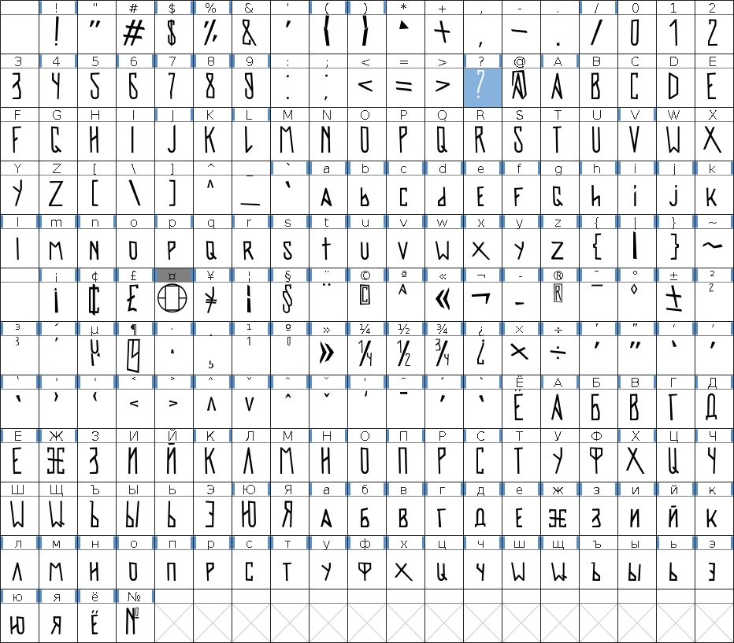
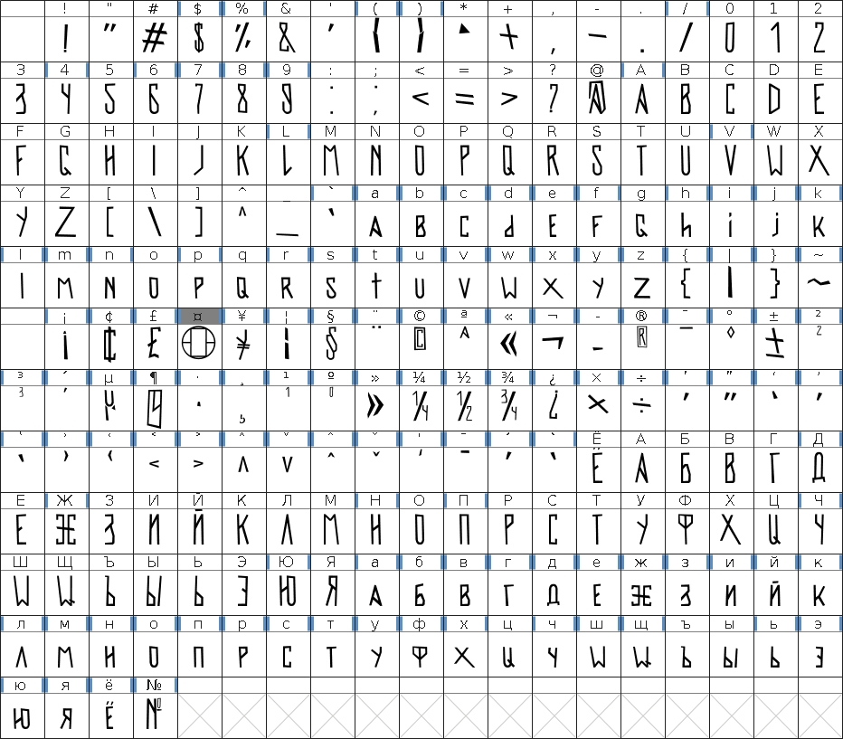
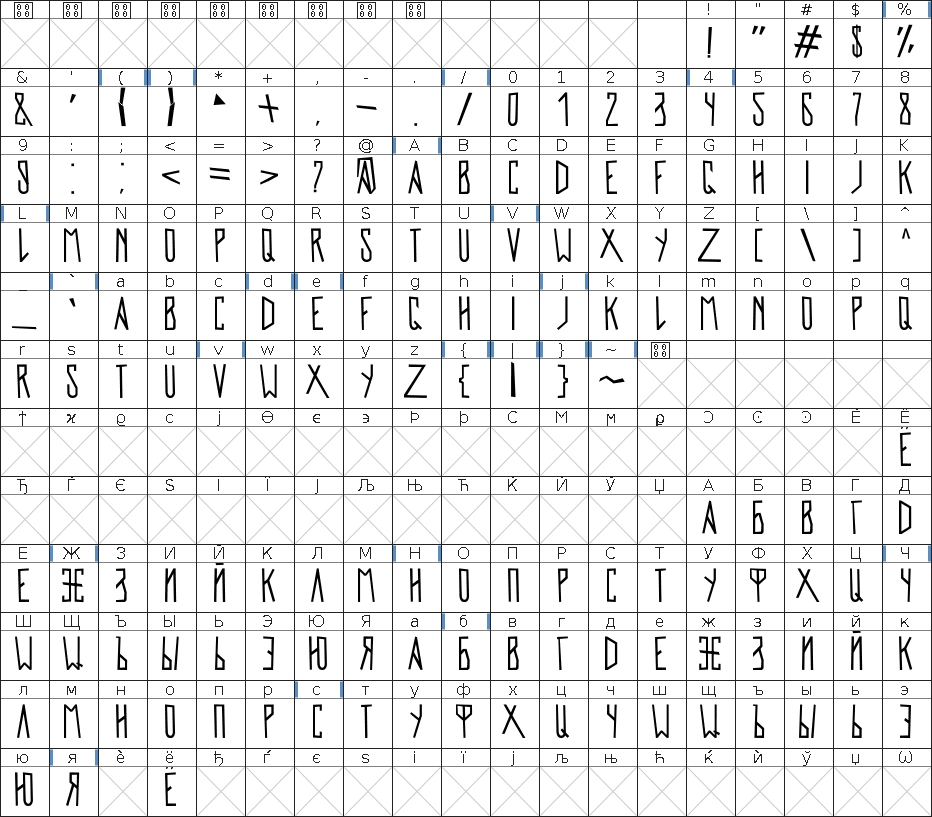
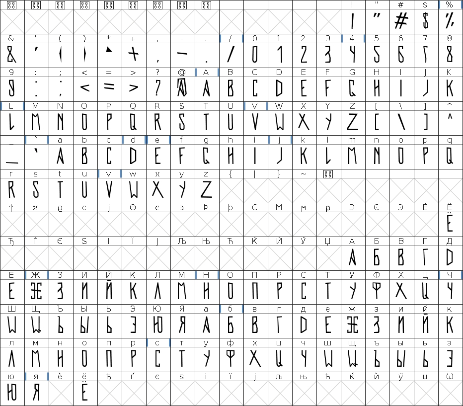

Версия 1.4
У 「!」и「?」увеличено расстояние между точкой и верхней частью
Выравнены расстояния между всеми символами

Скачать
Версия 1.3
Добавлено несколько новых символов, появилась поддержка строчных букв.
+ некоторые исправления.

Скачать
Версия 1.2
Был добавлен Пробел и несколько символов, были переделаны скобки на более читабельный вид и исправлена 7.

Скачать
Версия 1.1
Было добавлено множество символов, цифры и кириллица (русская).

Скачать
Версия 1.0